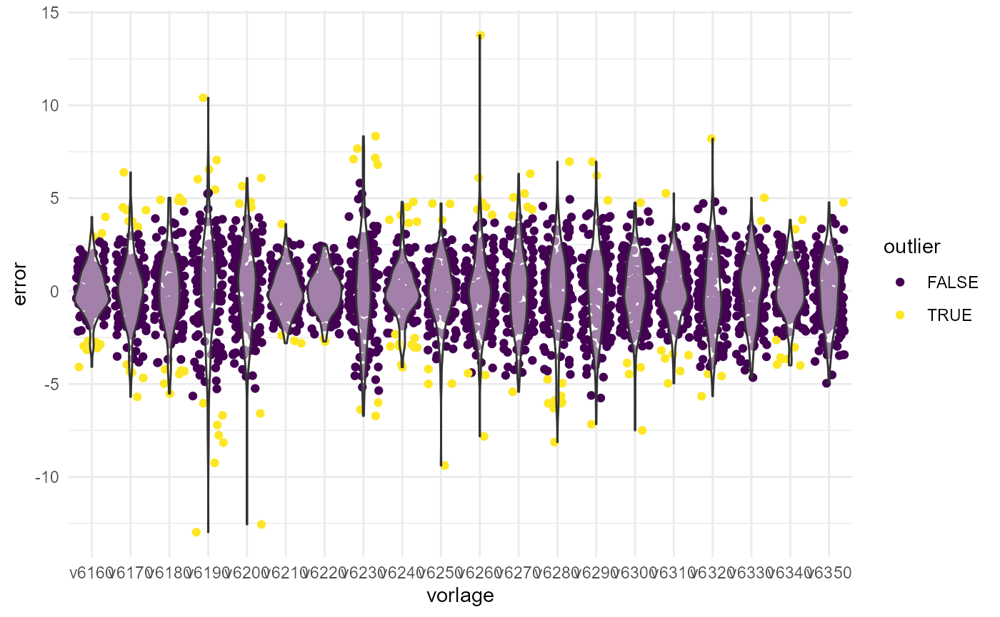

jaanteile.RmdEin Glücksfall: stabiles Abstimmungsverhalten über die Zeit. Die ideologische Positionierung einer Gemeinde verändert sich nur sehr langsam. Daher können wir für einen Abstimmungssontag anhand der Daten der Vergangenheit Vorlagen identifizieren, welche ähnliche Zustimmungsmuster aufweisen und für die Gemeinden eine Vorhersage treffen und simulieren, was wir anhand der Vergangneheit erwarten würden.
library(plausi)
library(tidyverse)
#> -- Attaching packages --------------------------------------- tidyverse 1.3.0 --
#> v ggplot2 3.3.2 v purrr 0.3.4
#> v tibble 3.0.2 v dplyr 1.0.0
#> v tidyr 1.1.0 v stringr 1.4.0
#> v readr 1.3.1 v forcats 0.5.0
#> -- Conflicts ------------------------------------------ tidyverse_conflicts() --
#> x dplyr::filter() masks stats::filter()
#> x dplyr::lag() masks stats::lag()
library(swissdd)
#> ************************************************************
#> * swissdd 1.0.3 *
#> * developed by politan.ch *
#> * *
#> * Data sources: *
#> * Federal Statistical Office *
#> * https://www.bfs.admin.ch/ *
#> * *
#> * Swissvotes *
#> * https://swissvotes.ch/ *
#> * *
#> ************************************************************
library(earth)
#> Lade nötiges Paket: Formula
#> Lade nötiges Paket: plotmo
#> Lade nötiges Paket: plotrix
#> Lade nötiges Paket: TeachingDemos
# BFS Nummern ausgewählter Gemeinden
bfs_nrs <- c(6,7,10,11,12,87,219,294 ,181,38,60,92,119,182,218)
Sys.setenv(https_proxy="")
# Beziehe historische Daten
results <- swissdd::get_nationalvotes(from_date="2017-03-01", to_date="2020-09-27")
# Formattiere historische Daten um : eine Spalte je Vorlage
testdata <- results %>%
filter(canton_id==1) %>%
mutate(id=paste0("v",id)) %>%
select(jaStimmenInProzent, id, mun_id, mun_name) %>%
pivot_wider(names_from=id, values_from = jaStimmenInProzent) %>%
drop_na()
# Trainingsdatensatz erstellen (nur ausgezählte Gemeinden)
train <- testdata %>%
mutate_at(vars(v6310,v6330),
~ifelse(mun_id %in% bfs_nrs,NA, .))
predicted_results <- predict_votes(c("v6330","v6310"),train=train, test=testdata ,exclude_votes = TRUE, geovars=c("mun_id","mun_name" ))
#> Lade nötiges Paket: lattice
#>
#> Attache Paket: 'caret'
#> The following object is masked from 'package:purrr':
#>
#> lift
#> The following object is masked from 'package:plausi':
#>
#> RMSE
# Vorhersagefehler
predicted_results %>%
group_by(vorlage) %>%
summarize(rmse=RMSE(pred,real))
#> `summarise()` ungrouping output (override with `.groups` argument)
#> Warning: `...` is not empty.
#>
#> We detected these problematic arguments:
#> * `needs_dots`
#>
#> These dots only exist to allow future extensions and should be empty.
#> Did you misspecify an argument?
#> # A tibble: 2 x 2
#> vorlage rmse
#> <chr> <dbl>
#> 1 v6310 1.61
#> 2 v6330 2.10Plausi baut auf dem caret-package auf und lässt es somit zu, zwischen unzähligen Machine-Learning Algorithmen zu wählen und einfach umzustellen. Dies erleichtert es Modelle hinsichtlich Vorhersagegenauigkeit zu vergleichen.
Das ‘gvcEarth’ Model, ein MARS-Modell aus dem ‘earth’ package (Splines) wie auch ein svm-Modell schneiden am besten ab. Doch neben der Vorhersagegenauigkeit sollte das Modell auch möglichst robust gegenüber vermeintlich falschen Resultaten sein bzw. diese sollten die Vorhersage für eine Gemeinde nicht zu stark beeinflussen.
# Modelle die verglichen werden sollen
models <- c("gcvEarth","glmboost","pls","pcr","svmRadial")
# Funktion für Vergleich unterschiedlicher Modelle
test_models <- function(votes, train,test, model,...){
plausi::predict_votes(votes = votes,
train = train,
test=test,
method = model,
exclude_votes = TRUE,
...) %>%
dplyr::mutate(mod=model)
}
#Vergleich anhand der Vorhersage für drei Vorlagen
comparison <- map_dfr(models, ~test_models(votes=colnames(train)[c(-1,-2)][1:3],
train=train,
test=testdata,
model=.x,
geovars=c("mun_id","mun_name")))
# Vorhersagefehler je Modell pro Vorlage
comparison %>%
group_by(vorlage,mod) %>%
summarize(rmse=RMSE(pred,real,na.rm=TRUE))
#> `summarise()` regrouping output by 'vorlage' (override with `.groups` argument)
#> Warning: `...` is not empty.
#>
#> We detected these problematic arguments:
#> * `needs_dots`
#>
#> These dots only exist to allow future extensions and should be empty.
#> Did you misspecify an argument?
#> # A tibble: 15 x 3
#> # Groups: vorlage [3]
#> vorlage mod rmse
#> <chr> <chr> <dbl>
#> 1 v6310 gcvEarth 1.63
#> 2 v6310 glmboost 1.88
#> 3 v6310 pcr 2.28
#> 4 v6310 pls 1.88
#> 5 v6310 svmRadial 2.11
#> 6 v6320 gcvEarth 2.25
#> 7 v6320 glmboost 2.75
#> 8 v6320 pcr 3.16
#> 9 v6320 pls 2.75
#> 10 v6320 svmRadial 1.99
#> 11 v6330 gcvEarth 2.16
#> 12 v6330 glmboost 3.07
#> 13 v6330 pcr 3.31
#> 14 v6330 pls 3.03
#> 15 v6330 svmRadial 2.13
# predict_single_vote("v6310", traindata=testdata, testprop = 0.1,geovars=c("mun_id","mun_name"))
predictions <- predict_votes(colnames(testdata)[c(-1,-2)][1:20], train=testdata, testprop = 0.3,geovars=c("mun_id","mun_name"))
gem_pred <- predictions %>%
mutate(error=real-pred) %>%
group_by(vorlage) %>%
mutate(rmse=RMSE(pred,real)) %>%
mutate(error_rmse=error/rmse) %>%
mutate(outlier=is_outlier_double_mad(error_rmse))
ggplot(gem_pred, aes(vorlage, error))+
geom_jitter(aes(color=outlier))+
geom_violin(alpha=0.5)+
scale_color_viridis_d()+
theme_minimal()